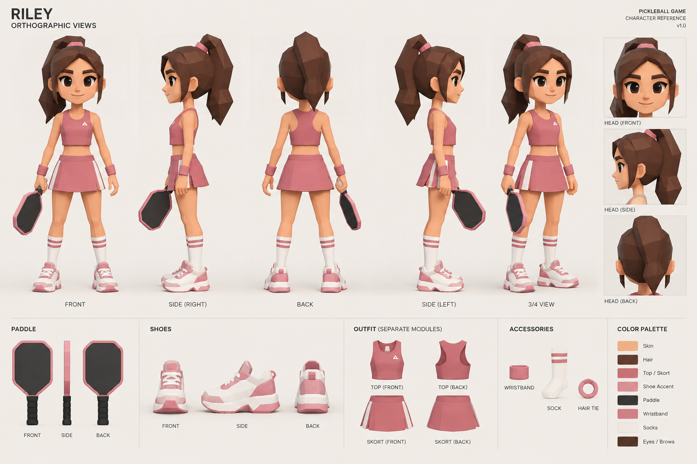
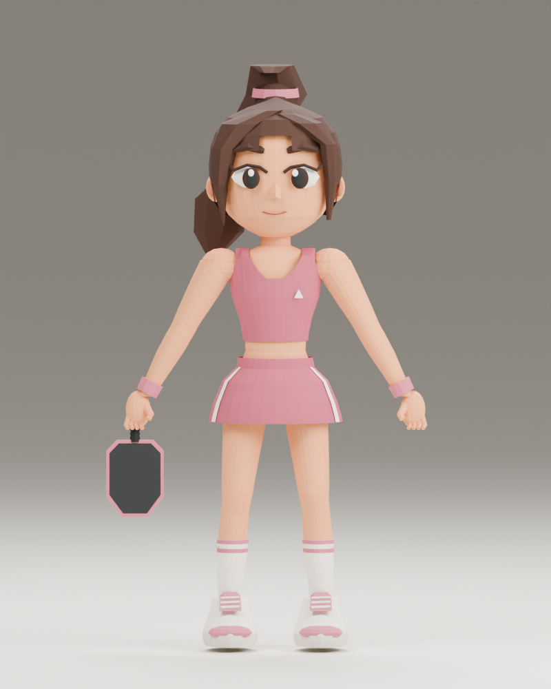
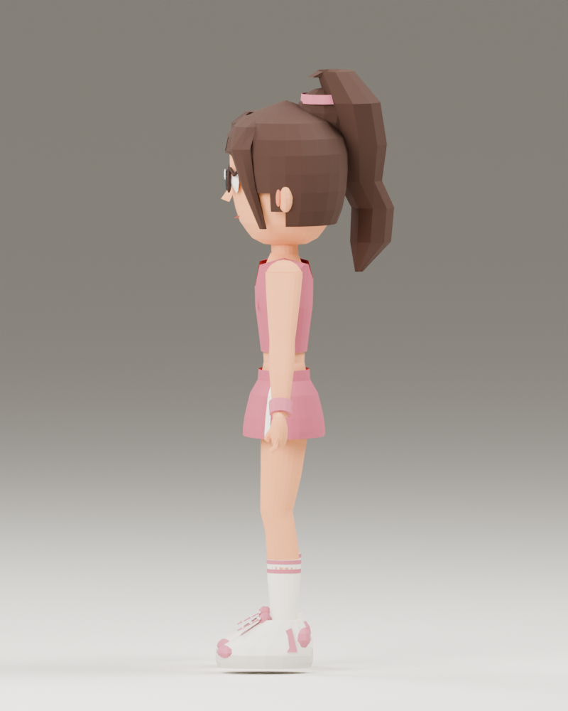
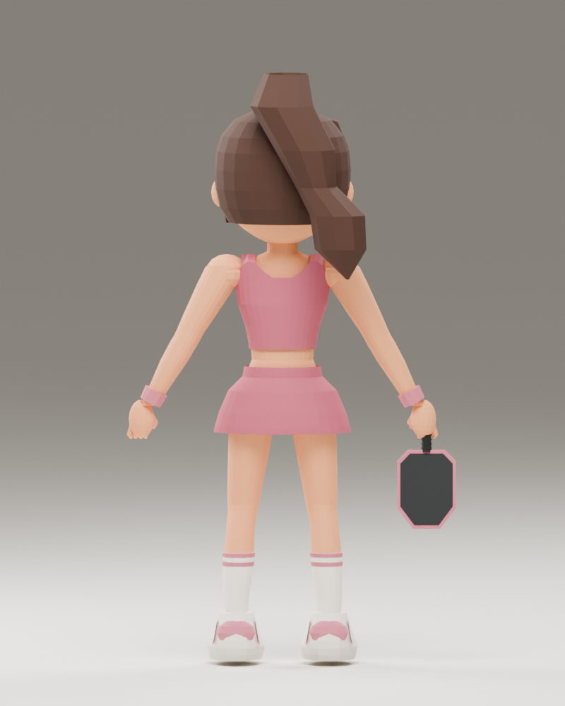
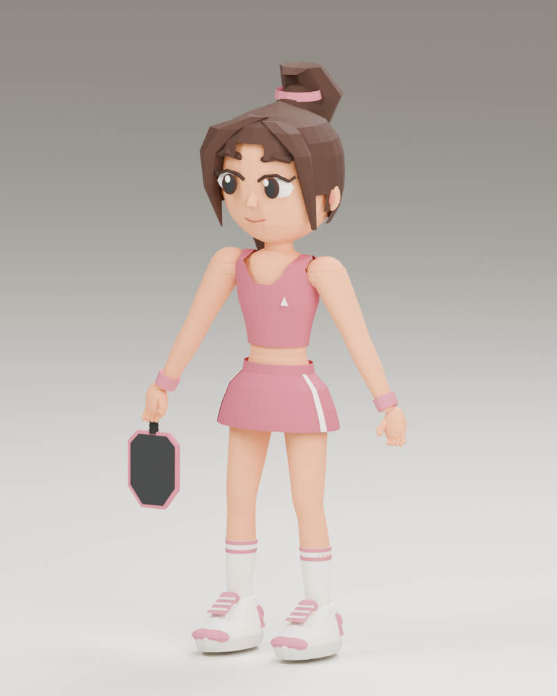

Blender renders alongside the supplied character reference.





The export uses an A-pose for rigging. The reference shows relaxed arms. Compare the head, torso, legs, hair and outfit across the views.